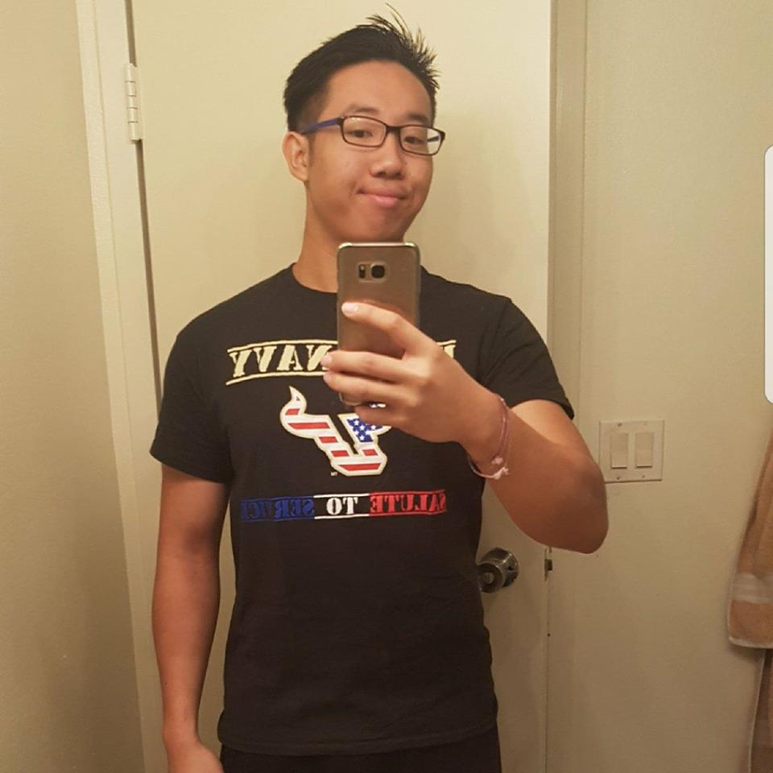

First Name: Wei Yang
Last Name: Yap
Email: weiyangyap@mail.usf.edu
Phone Number: (813)-000-0000
Personal Statement
To acquire a position that delivers innovative solutions to clients and help increase the number of members for University of South Florida Credit Union.
Education
University of South Florida
2015 - 2019 BA in Marketing
University of South Florida - Dean's List of Scholars for Academic Excellence in Spring 2016
Experience
International Relations Coordinator - Office of Multicultural Affairs (summer 2016)
Coordinate events with other board members
Connect with students from different countries and help them make friends
Handling of confidential information when making pairing processes
2015 International Festival Volunteer - Office of Multicultural Affairs
Communicate and interact with people from various countries
Assisted members of the board to find sponsors and help contact them
TEDxUSF volunteer - Center of Leadership and Civic Engagement
Helped evaluate speakers and gave constructive criticism
Planned and collaborate with other committee members with different personalities
Managed to finish projects within given deadlines
Skills
Able to speak English, Mandarin, Malay, and Cantonese fluently
Business programs:
Click to visit my blog.